开发文档
本篇主要讲解系统后台设置和模板规范
系统后台管理设置，访问你的域名/admin/目录下。在后台站点设置中，可以选择设置网站相关信息，请及时修改默认帐号密码
│─admin/ 后台登录管理 登录目录可新建名称
│ ├─app app.html下载目录
│ ├─js js文件
│ ├─css css文件
│ ├─images 图片文件
│ └─inc 采集及配置目录
│ └─cache 全站缓存生成目录
│─/ck/ M3U8解析播放器
│─/player/ 支持解析M3U8和mp4的播放器
│─/playm/ H5解析播放器
│─/apm/ 二维码生成目录
源码程序全部开源，支持二开美化模板， 其中 分类、内容、播放等页面的模板是可以修改替换的。
全站公共样式文件，主要文件目录下：
/index.php 网站首页
/head.php 全站头部
/foot.php 全站尾部
/dh.php 综合娱乐资源导航列表
/top.php 影片热门搜索榜单
/sidebar.php 全站广告推荐
/gm.php 程序内容简介
/cxdy.php 内容发布显示页
/app.php APP软件下载页
/404.php 系统提示错误页面
/movie.php 资源分类频道一
/moviea.php 资源分类频道二
/movieb.php 资源分类频道三
│
/seacher.php 资源搜索结果一
/seachera.php 资源搜索结果二
/seacherb.php 资源搜索结果三
│
/playb.php 直链视频解析页
/player.php 直播音频解析页
/playc.php 资源内容发布解析页
/playm.php H5视频解析页
│
/jiazai.php 视频播放加载页面
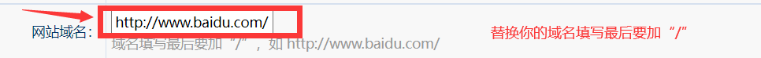 登录后台设置，将需要访问的域名填入！ 域名结尾需要加“/” 示例； http://www.baidu.com/
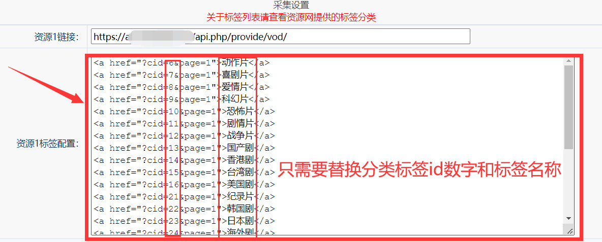
资源网接口标签分类列表（请自行查查看资源网接口地址提供的分类标签）
可直接访问资源网提供的接口即可看到标签分类列表
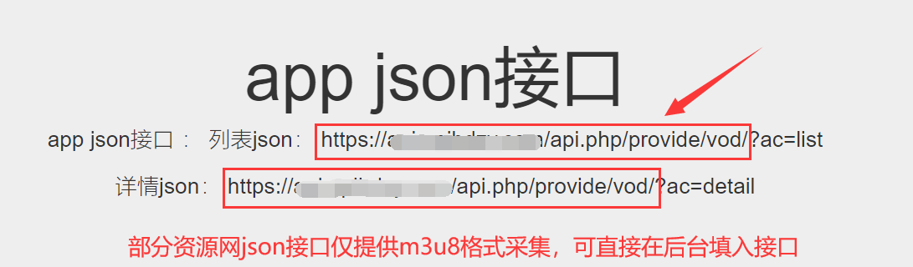
接口示例；
https://xxx.xxx.xxx/api.php/provide/vod/
接口示例或：
https://xxx.xxx.xxx/api.php/provide/vod/from/m3u8/
请使用资源网提供的m3u8的josn数据接口
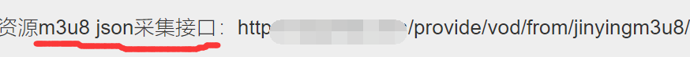
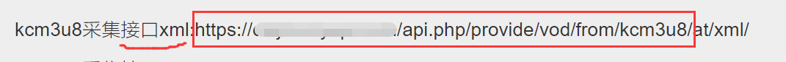
如图打开资源站找到帮助中心，并点击苹果cmsv10或者是m3u8 josn,一般在资源站首页头部，仔细找一下（大部分有帮助中心入口，少部分没有，但提供了接口地址，有接口地址也一样可以，实在找不到去咨询资源站的人）
第二步：找到并复制我们需要的接口地址，选择适合自己网站的采集源。
配置接口时要填写正确的API地址和其他相关信息。
在使用采集接口时需遵守法规和网站规定。
比如某个资源网，我们看到对方提供了两个采集接口
某个资源 https://xxx.axxx.xxx/api.php/provide/vod/
某个M3U8资源 https://xxx.xxx.xxx/api.php/provide/vod/from/m3u8/
大部分新手资源站提供几个接口就用几个，其实没必要
两个接口资源是相同的，所以我们只需要选择一个就可以，我这里推荐选择M3U8资源，因为这个资源你可以使用自己的播放器，只需要用到m3u8，则直接添加接口地址（https://xxx.xxx.xxx/api.php/provide/vod/from/m3u8/）
有个别资源网的数据都是m3u8播放源格式则直接添加（https://xxx.axxx.xxx/api.php/provide/vod/）
#返回数据示例如：
[{"type_id":1,"type_name":"电影"},{"type_id":2,"type_name":"连续剧"},{"type_id":3,"type_name":"综艺"},{"type_id":4,"type_name":"动漫"},{"type_id":5,"type_name":"资讯"},{"type_id":6,"type_name":"动作片"},{"type_id":7,"type_name":"喜剧片"},{"type_id":8,"type_name":"爱情片"},{"type_id":9,"type_name":"科幻片"}
##关于标签列表绑定
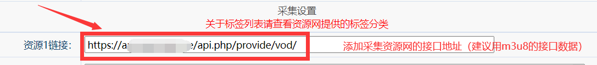
接口必要信息是
标签的名称， 分类ID 或 分类名称 （如果同时存在以 分类ID为准）
标签id和名称：
（type_id）为id
（type_name）为名称
如上面某些资源网的一级id标签
例如：
{"type_id":1,"type_name":"电影"},{"type_id":2,"type_name":"连续剧"},{"type_id":3,"type_name":"综艺"},{"type_id":4,"type_name":"动漫"},{"type_id":5,"type_name":"资讯"}
二级id标签列表
例如：
{"type_id":6,"type_name":"动作片"},{"type_id":7,"type_name":"喜剧片"},{"type_id":8,"type_name":"爱情片"},{"type_id":9,"type_name":"科幻片"}
或者标签是含（"type_pid"）为0都是一级标签
一级标签分类示例；
{"type_id":1,"type_pid":0,"type_name":"电影片"},{"type_id":2,"type_pid":0,"type_name":"连续剧"},{"type_id":3,"type_pid":0,"
二级标签分类（"type_pid"）有数字显示则是二级标签
二级标签分类示例；
{"type_id":6,"type_pid":1,"type_name":"动作片"},{"type_id":7,"type_pid":1,"type_name":"喜剧片"},
例如某些资源网数据在一级标签列表id无内容，可选直接从二级标签列表选择绑定！具体请查看资源网提供的标签列表！
示例：
id绑定可从
{"type_id":6,"type_name":"动作片"}
以下开始全部绑定，请在影视后台管理设置绑定即可！（将标签的ID数字和名称对应填入）
由于部分资源网的CMS接口（josn数据接口）的id绑定内容无显示，示例像上面某个资源返回的josn数据，list&t=1，数字（1）则代表标签列表，如绑定1将会无内容显示，可以在后台设置跳过一些id无显示出来的内容或不需要采集的标签
由于部分资源网标签列表接口的id数字将会影响采集内容，请在影视后台管理设置添加或修改替换
参考下列把所有分类都替换好，并保存
标签分类列表绑定示例；
<a href="?cid=6&page=1">动作片</a>
<a href="?cid=7&page=1">喜剧片</a>
<a href="?cid=8&page=1">爱情片</a>
<a href="?cid=9&page=1">科幻片</a>
<a href="?cid=11&page=1">剧情片</a>
.........
只需要将资源网提供的接口分类标签和名称依次分别填入替换即可
添加替换采集标签数字id和名称
<a href="?cid=（填入数字id）&page=1">（填入该id的名称）</a>
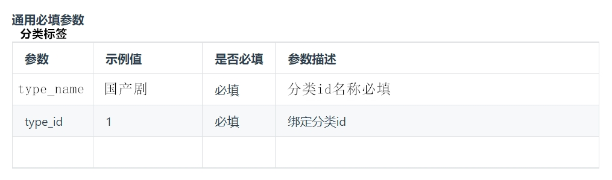
具体ID及名称请查看资源网接口提供的相关数据
##测试采集接口
完成采集规则的配置后，我们需要测试一下采集接口是否正常或者搜采集的标签分类列表是否正常显示出来，若该标签分类无任何内容显示，请在后台删除或替换该标签id和名称。
在网站首页点击“更多资源”-就可以看到，然后任意点击已经绑定的分类列表查看，如果有内容显示，则说明采集接口已经配置成功了。
注：每次在后台配置修改或者替换，请必须要在后台点击“更新缓存” 这样才会清空全部缓存，方便查看已经更换的展示内容
接口类型：json的m3u8
支持自定义规则：用户可以根据自己的需求，定义筛选采集资源网提供的id数据的规则。例如，可以指定需要采集的id分类数据类型等。
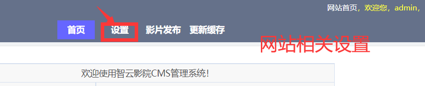
访问你的域名/admin
登录后台设置修改网站信息
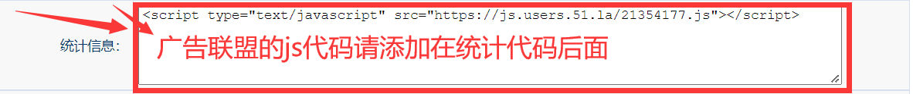 怎么添加联盟的js广告最简单的方法。前提是已经你已经获得了联盟的js广告， 直接进入怎么添加的步骤。对于新手来说最简单的也就是最实用的 添加js联盟广告有几种 咱们就用最简单的一种。 系统-----网站参数配置-----统计代码 没错！就是这里 把你获取的联盟js广告代码直接复制粘贴到统计里面就可以了，网站里面没有放统计代码 你如果放了统计代码的话 一定要分行隔开，不要混在一起。 ##其他广告推荐设置 只需要根据后台默认原来的广告代码直接替换修改你的广告地址及图片展示、文字 若不需要网站展示广告推荐，则在后台设置将框框内的列表页广告代码全部删除即可！由于每个广告展示位置不一样，可自定义选择清除该代码或者保留该位置展示代码
参数:
具体可以在后台管理可以看到代码示例，只需要更换名称和链接地址即可！
多个友链代码示例；
<a target="blank" class="gobtn" href="链接地址">资源名称</a>
<a target="blank" class="gobtn" href="链接地址">资源名称</a></br></br>
<a target="blank" class="gobtn" href="链接地址">资源名称</a><a target="blank" class="gobtn" href="链接地址">资源名称</a>
为不影响网站美观，资源名称建议四个字，
若不想展示友链，只需要删除该条友链代码，不想展示全部友链，将友链代码全部删除留空保存即可
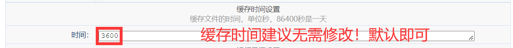
缓存文件的时间，单位秒，86400秒是一天，默认3600
根据个站长选择不同，可以自行更换缓存的有效时间
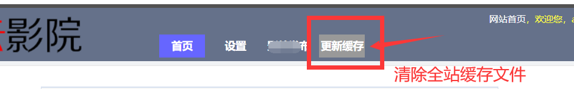
若在后台管理设置，修改和更换网站信息后，访问网站未能显示新的内容，请直接在后台设置中，找到（更新缓存）点击后即可清空全站缓存！
全站自动更新缓存，无需再清除更新缓存
后台可自定义发布分享播放源或删除
若删除该条播放源可清空该条名称标题和地址即可！然后保存！
##注；
播放源连接发布相关格式
若是直链的播放源无需添加播放器！
以及站内视频的链接无需添加播放器！
含有后缀的.m3u8的播放源需要添加播放器（player/index.html?vurl=），页面才能播放
示例；
player/index.html?vurl=http://xxx.xxx.xxx/xxx.m3u8
若清空全部的发布内容，只需要自动源码目录中的文件夹（data）里面的 aik.seturl.php 文件删除即可！
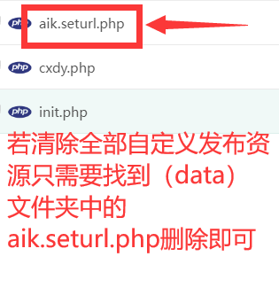
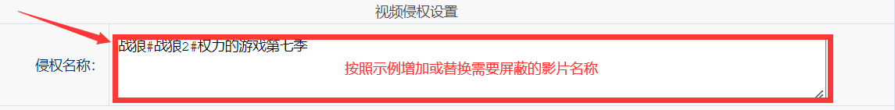
影片侵权设置；
只需要把影片名称填入，并用#隔开，以此类推，结尾不用#
=======示例格式=======
战狼#战狼2#制服#可爱的妹妹
在目录中找到文件（wx_api.php）
将里面的域名地址替换你的域名地址即可！
以及填入公众号提供的密匙token
将weixin替换密匙token
更换参数；
define("TOKEN", "weixin");
微信号接口调用
你的域名地址/wx_api.php?keyword=
若无需在微信上调用则不需要任何修改，该wx_api.php文件不用理会，无任何影响
yt.php 天气预报采集 yy.php YY舞曲MV视频采集 ym.php 六间房视频采集 bb.php 哔哩视频全站采集 zbyk.php 随机映客娱乐直播采集 dym.php 影片资讯采集 zbtv.php 各类电视直播列表 ...... 等各种采集PHP文件其中直播文件的zbtv.php可以自行打开替换或修改增加直播源添加新的直播源地址前需要添加播放器解析 格式示例； <li><a target="_blank" href="player.php?url=http://xxx.xxx.xxx/xxx.m3u8">直播名称</a></li> 若需要添加更多请按照格式添加即可，以此类推......images文件夹则是全站相关配图: 若需要更换网站logo和网站推荐广告图片，只需要重新命名该文件名称一模一样替换即可！ 例如； logo.png 须把该图片名称命名一模一样替换到images文件夹覆盖即可 提示；注意图片展示大小规格，可点击查看原来的图片规格大小进行PS 其他广告图片展示方法一样 也可以使用第三方提供的链接地址在后台设置替换图片地址保存即可！！后台文件目录为 admin 可以重新命名其他需要名称 以及在后台管理设置更换登录帐号密码等等本模板为经典自适应端爱客模板，模板开源可二开，美化等等 开发模板 详细可参考 模板结构 来构建你的模板结构，这里知识点主要是开发技巧，不做详细的构建步骤介绍,开发任何网站模板是要具备一定 html css 和 javascript 等前端基础哦 使用函数，需要对模板输出变量使用函数 变量输出使用的函数PHP函数移到模板中 模板继承是一项更加灵活的模板布局方式，模板继承不同于模板布局，甚至来说，应该在模板布局的上层。模板继承其实并不难理解，就好比类的继承一样，模板也可以定义一个基础模板（或者是布局），并且其中定义相关的区块，然后继承该基础模板PHP代码中就可以对基础模板中定义的区块进行重载。 你甚至还可以在模板中加载外部文件模板定制或其他程序开发
可联系QQ号或QQ群咨询
在使用智云CMS的过程中，可能会遇到一些常见问题，下面我们就来逐一解决这些问题：
1.采集内容无显示：可能是因为目标网站更新标签分类导致id规则不再适用，需要重新配置采集规则的标签分类id；
2.无法获取到资源：可能是因为目标网站对IP进行了限制或者资源接口地址已经更换新的接口地址，资源网接口地址失效等等，需要重新到资源帮助中心获取该接口地址；
3.视频播放速度慢或卡顿：由于每个资源网提供的视频源不同，可能会造成网站播速度，可在后台更换其他的资源网接口地址；
4.采集速度慢：可能是因为网络环境不佳，需要优化网络环境。
5.如何处理采集过程中的错误：
在进行数据采集时，可能会出现一些错误，比如无法抓取到数据、抓取到错误的数据等。此时需要及时排查问题并调整相关标签分类id参数。
6.缓存更新：后台管理设置已经相关信息，访问网站平台未能显示新的内容，请在后台管理点击“更新缓存” 即可，全站自动更新并自动更新缓存，无需再次进入后台管理更新缓存；
7.提示 设置网址和基本信息后，更新缓存！更新缓存！更新缓存！
8.为体验更多完美功能和修复，请及时更新智云CMS程序源码
资源网接口合集： 点击进入查看
廉价服务器推荐
全网超低价服务器出售 购买地址 https://www.zywlk.cn
特价年付云服务器推荐
特价年付云服务器出售 购买地址 http://www.chaohuiyun.com
免费虚拟空间推荐
各种高性能虚拟空间出售 购买地址 https://www.232323.com.cn